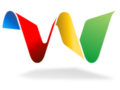
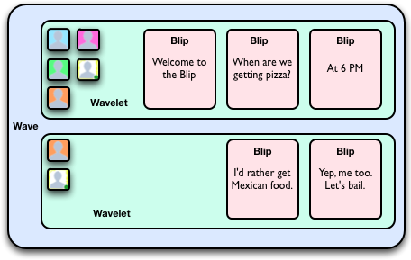
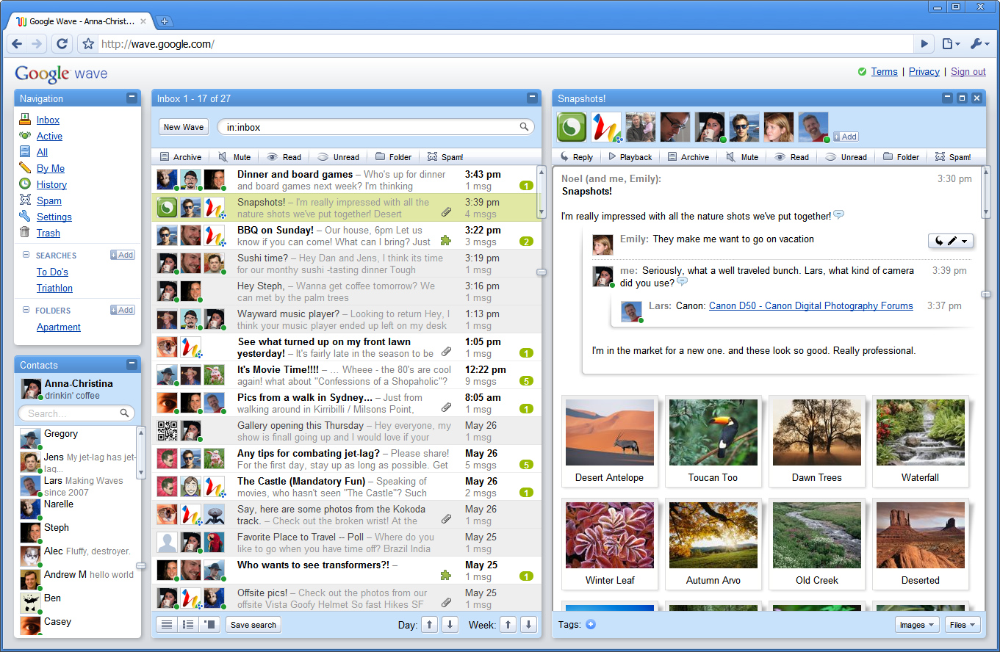
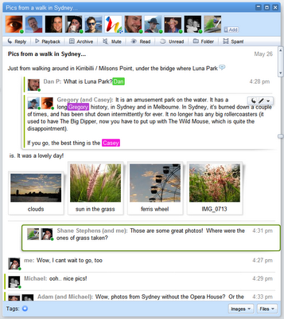
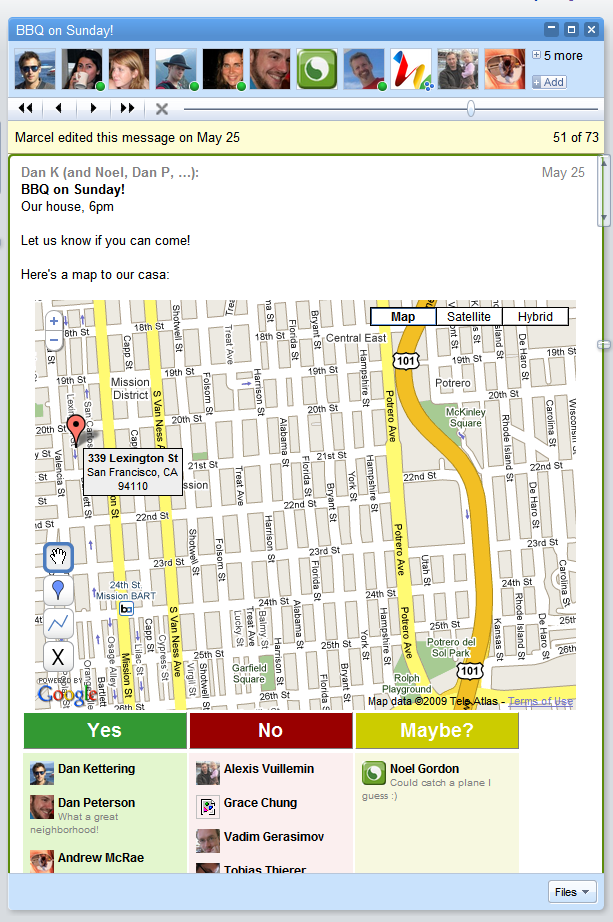
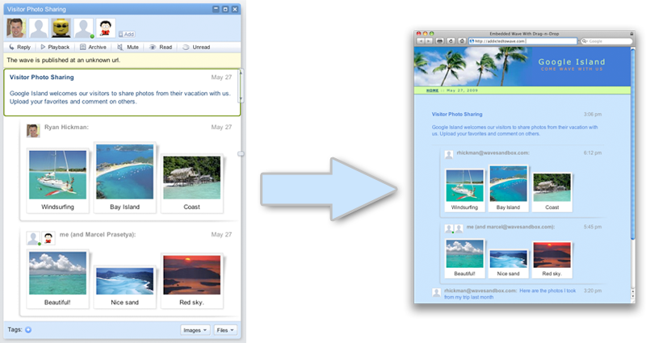

Google Wave :
Plateforme de communication centralisée
 Aujourd'hui à la conférence Google I/O (celle ou les participants se sont vu offrir un téléphone HTC Magic, aussi nommé Google Ion, gratuitement), une annonce de Google n'est pas passée inaperçue. Google veut avec Wave (vague en anglais) révolutionner la façon dont on communique sur le net. L'ambition est immense, le projet également, mais l'enthousiasme généré par les développeurs suite à cette annonce donne de grand espoirs. Plus une communauté est active sur un projet, plus celui-ci peut réussir. Google a testé cet effet avec Android, et veut maintenant reproduire le schéma.
Google Wave consiste en un lieu centralisé pour toutes vos communications électronique. Google Wave introduit de nouveaux termes pour exprimer des notions jusqu'ici peu utilisés dans les conversations électroniques.
Une fois ces éléments définis, voici l'interface de Google Wave.
Analysons cette interface. En haut, dans la colonne de gauche, nous retrouvons les habituels dossiers de réception et d'émission d'emails (Réception, Corbeille, Tous, Spam...) ainsi que l'accès aux paramètres. Juste en dessous, une liste de contacts (pour l'instant ça ressemble beaucoup à Gmail). La seconde colonne contient les waves avec un sujet, une icône pour les pièces jointes (le trombone gris) et les gadgets (la pièce de puzzle verte), les contacts y participant le nombre et l'heure des messages ainsi que le nombre de blips non lus (en blanc sur fond vert). En sélectionnant une wave, elle s'affiche dans la colonne de droite. On retrouve tout en haut la liste des participants, une barre d'outils et les blips. Jusqu'ici, rien de très original.
L'intérêt de Google Wave est que chaque Wave est une façon unifiée de communiquer avec ses contacts. Qu'ils soient tous hors ligne, connectés à leur messagerie instantanée, ou un savant mélange des deux, la façon de communiquer est TOUJOURS la même : il suffit de cliquer sur une vague et de commencer à taper (pour le texte), glisser déposer une image (pour l'uploader), coller un lien vers youtube, flickr, etc... pour insérer une galerie ou une vidéo automatiquement. Google Wave se charge alors du reste en temps réel.
Un contact est connecté ? Il va voir en temps réel ce que vous marquez (si vous le souhaitez et qu'il fait partie de vos destinataires), caractère par caractère, sans qu'il soit nécessaire de cliquer sur "envoyer". Il pourra même répondre ou il le souhaite (avant, au milieu ou après votre contribution) et éditer ce que vous avez dit.
Un autre contact n'est pas connecté ? Pas de soucis, wave enregistre le tout en temps réel, et ce destinataire pourra revoir ce que vous avez tapé (mais aussi les autres participants) et dans quel ordre grâce à une barre de temps (timeline) similaire au visionnage d'une vidéo.
Un des contacts est japonais et ne parle pas un mot de français ? Invitez donc un robot de traduction à votre wave, il se chargera de traduire (toujours en temps réel) ce que vous dite. Vous parlez des cours des actions de MSFT et GOOG ? Un robot financier que vous aurez invité pourra ajouter les graphes temps réel des cours des actions pour les entreprises dont vous parlez. Assez parlé de travail, organisons une soirée ! Intégrez une carte Google maps et éditez la en temps réel avec les autres participants.
Vous allez me dire que c'est du Google docs en temps réel. Oui ! Mais c'est aussi du Gmail, du Google Talk, du Google calendar, du Google Maps, du Youtube, du Picasa, du Gdrive du Google Translate et du Orkut en même temps. Et même d'avantage ! Un ami est sur twitter ? Pas de soucis, un robot peut intégrer ses tweets dans la vague. Un autre ami est disponible via son téléphone mobile ? Un sms pourra lui envoyer toutes les informations de la discussion.
Google Wave a pour objectif de devenir 3 choses : un service, une plateforme et un protocole. Le service, Google Wave est exactement ce que vous venez de découvrir via les paragraphes précédents et les captures d'écran. La plateforme est l'application derrière Google Wave et son API, open source, disponibles pour être installés par tous (pour les entreprises par exemple). Google espère ainsi que ce système soit utilisé par plusieurs grosses entités pour atteindre une masse critique rapidement. Enfin, le protocole (brouillon disponible) a pour but de permettre à tous les waves installés de pouvoir communiquer. Ainsi si un utilisateur de Google Wave veut parler à un utilisateur de Microsoft Wave et inviter un robot de Yahoo Wave, le tout doit savoir comment communiquer.
L'espoir de Google est d'attirer les développeur dans leur API Google Wave afin de générer un cercle vertueux : des développeurs font des choses cool avec Wave, plus d'utilisateurs viennent sur le service, donc nouveaux développeurs et fournisseurs de service arrivent sur la plateforme...
À en croire les réactions de l'auditoire de Google I/O, la chose a été TRÈS bien accueillie. Et il est fort probable que l'ouverture de l'API ce vendredi soit un grand succès pour Google.
Le potentiel (mon enthousiasme) étant très fort, je vais essayer de vous présenter un autre exemple de ce qui sera possible avec wave. J'ai omis plus haut de vous parler d'une fonctionnalité intéressante, la possibilité de publier une vague. Ainsi vous pourriez rendre public le contenu d'une vague de votre choix, faire qu'elle soit indexable même autoriser d'autres utilisateur a y prendre part.
Ainsi une vague publique mais uniquement accessible en lecture pourra constituer un de vos billets sur votre blog, que vos lecteurs liront en temps réel alors que vous serez en train de le taper avec vos co- auteurs. Une autre vague publique mais accessible en écriture pourra faire office de flux de commentaires. Les possibilités sont quasiment infinies...
Ecrit par Luka à 20:55
Zorgloob : http://www.zorgloob.com/2009/05/google-wave-platteforme-de.asp